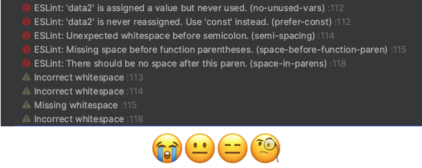

Developers all have different career backgrounds, education, workflows, and so on. Because of this, it can be difficult to keep coding standards in place to maintain code readability without taxing developers’ time by following strict standards. While one developer might believe minimal readability is needed for small applications, another may want to follow a strict standard for all projects, no matter how small. Finding the balance of when to implement a set standard can be difficult. Today, I would like to discuss when I believe is an appropriate time to increase productivity and readability for developers through standardization.
To start, I would like to consider the pros of standardization. A proper code standard should help developers save time in the long run if it is implemented correctly. When projects and applications grow in size, the productivity and time saved increase exponentially when following a standard. With multiple developers in the mix, hundreds of files, and tens of thousands of lines of code it is important to have a structured and consistent way to write code. This helps future developments with code comprehension and reusability. While removing the probability of a code refactor in the future. During development, it can also save time on debugging and troubleshooting with other developers. To summarize, when implemented correctly and at the right time, coding standards will save teams time and headaches.
When projects are small or only require a developer or two, it doesn’t always make sense to create standardization and then try to adhere to it strictly. It can frustrate developers with another learning curve, rigid constraints, and subjectivity against other developers on standards. Because of this, I don’t believe it makes sense to create new standards when developers are working alone or on minimal projects. However, best practices should still be practiced and maybe a coding standard that has always been created can be implemented. As projects grow with more developers and code, custom standards can be created and added to fit the project better with the specific needs of the project.
While coding standardizations create strict rules, for what to do and when to do it the same is not for when to implement standardization. It is up to the team to decide on an appropriate point in projects to start implementing standardization. However as stated before, it is best practice to keep a level of consistency among developers and to follow a simple company-wide standardization. When projects grow, the idea of new standardizations can be brought up. It is up to each induvidual developer and team to decide when this happens.